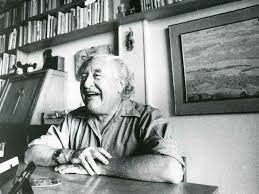

"[...]Debo salvarlo todo si he de salvarme entero.[...]"
GABRIEL CELAYA; Las Cartas boca arriba, 1951.
GABRIEL CELAYA
Introducción
Su nombre completo era Rafael Gabriel Juan Múgica Celaya Leceta, lo que aprovechó para firmar sus obras como Rafael Múgica, Juan de Leceta o Gabriel Celaya. Presionado por su padre, se radicó en Madrid, donde inició sus estudios de Ingeniería y trabajó por un tiempo como gerente en la empresa familiar.
Entre 1927 y 1935 vivió en la Residencia de Estudiantes, donde conoció a Federico García Lorca, José Moreno Villa y a otros intelectuales que lo inclinaron por el campo de la literatura, llevándolo a dedicarse por entero a la poesía. Combatió durante la Guerra civil española en el bando republicano y estuvo preso en un campo de concentración en Palencia. En 1946 fundó en San Sebastián, con Amparo Gastón, la colección de poesía «Norte» y desde entonces abandonó su profesión de ingeniería y su cargo en la empresa de su familia.
La colección de poesía «Norte» pretendía hacer de puente entre la poesía de la generación de 1927, la del exilio y la europea. Aparecen así, bajo ese sello editorial, traducciones de Rainer Maria Rilke, Arthur Rimbaud, Paul Éluard o William Blake.
En 1946 publicó Tentativas, libro en prosa en el que por primera vez firma como Gabriel Celaya. Esta primera etapa es de carácter existencialista.En los años cincuenta se integró en la estética del compromiso (Lo demás es silencio 1952 y Cantos Iberos 1955, verdadera biblia de la poesía social). Junto a Eugenio de Nora y Blas de Otero, defiende la idea de una poesía no elitista, al servicio de las mayorías, "para transformar el mundo". Cuando este modelo de poesía social entró en crisis, Celaya volvió a sus orígenes poéticos. Publicó La linterna sorda y reeditó poemas anteriores a 1936. También ensayó la poesía experimental y la poesía concreta en Campos semánticos (1971). Entre 1977 y 1980 se publicaron sus Obras Completas en cinco volúmenes.
Contrario al régimen franquista, después de la dictadura, se presentó como candidato por Guipúzcoa a las elecciones generales de 1977, en la lista del Partido Comunista de España. En 1987 publicó El mundo abierto. Falleció el 18 de abril de 1991 en Madrid y sus cenizas fueron esparcidas en su Hernani natal.
Poemas
FATIGA
Sentirse fatigado.
Fatiga, dulce nombre
para este barro sucio que uno arrastra en su sangre.
Sentirse encochinado,
¡Ay vida espesa y turbia
que nos agria la boca con su llanto cuajado.
Sentirse vivo y muerto.
O no senitrse acaso.
La pena es tan antigua que no puede pensarse.
Digo siempre: otra vida.
Digo siempre lo mismo.
Digo lo que dice las gentes cualquiera.
-Sé digno. No te quejes.
-No me quejo. Me caigo,
me aplasto en versos anchos y, estúpido, descanso.
Descanso y rumio poemas.
Segrego bilis. Rabio.
Trabajo a fin de cuentas más de lo que debo.
Estar quieto es difícil.
No es estar. Es hundirse.
Mas, palabra, algún día me callaré del todo.
Por ahora aquí sigo,
fatigado, indeciso,
tan cerca de la nada que me gusta hacer versos.
Hago también dinero.
Hago el amor. Y bebo.
Hgo todas las cosas que puedan anularme.
Y aún me siento cansado.
Quiero decir: me siento.
Y quiero no sentirme, quedarme indiferente.
La muerte es excesiva.
Emborracha. Me arrastra.
Si decido morirme, eso exalta mi vida.
Ya no sé lo que busco.
No es seguir, desde luego.
Seguir es lo que cansa y acabar es difícil.
¿He de empezar acaso?
Instantáneos comienzos:
Estar siempre empezando cosas que nunca acaban.
Lo ignoro todo. Entonces,
¿por qué estoy tan cansado?
Inútiles placeres, o sois lo bastante locos.
Todo pasa y camina.
Todo pesa y redunda.
Todo proyecta sombras que alarga el sol poniente.
Gabriel Celaya; "Avisos de Juan de Leceta", 1944-1946.